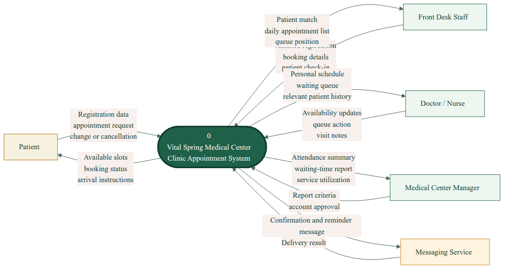
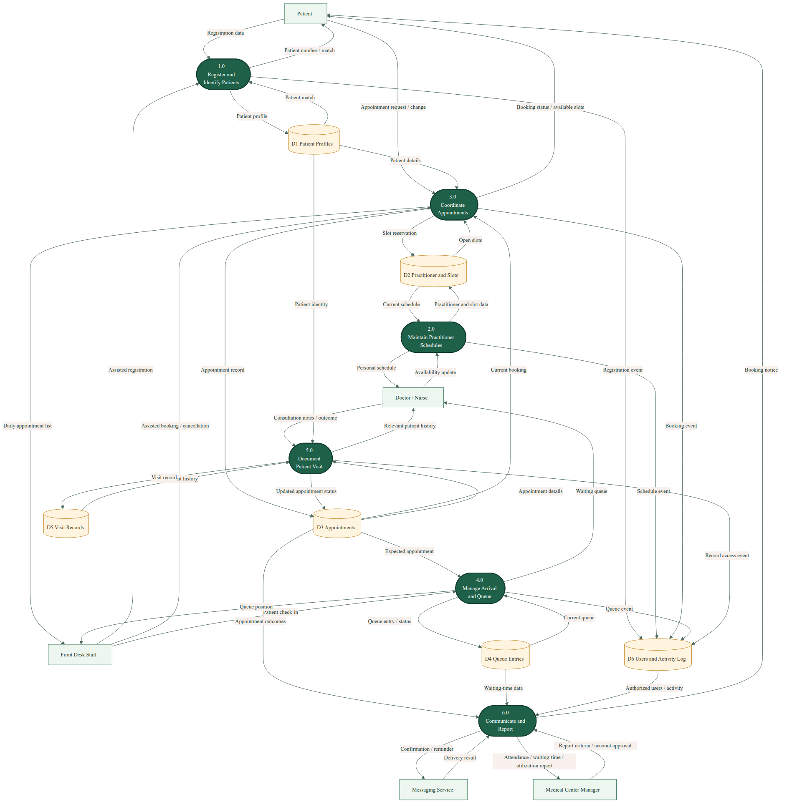
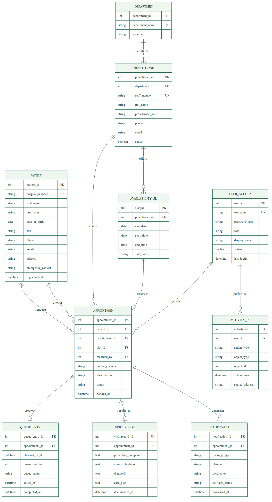
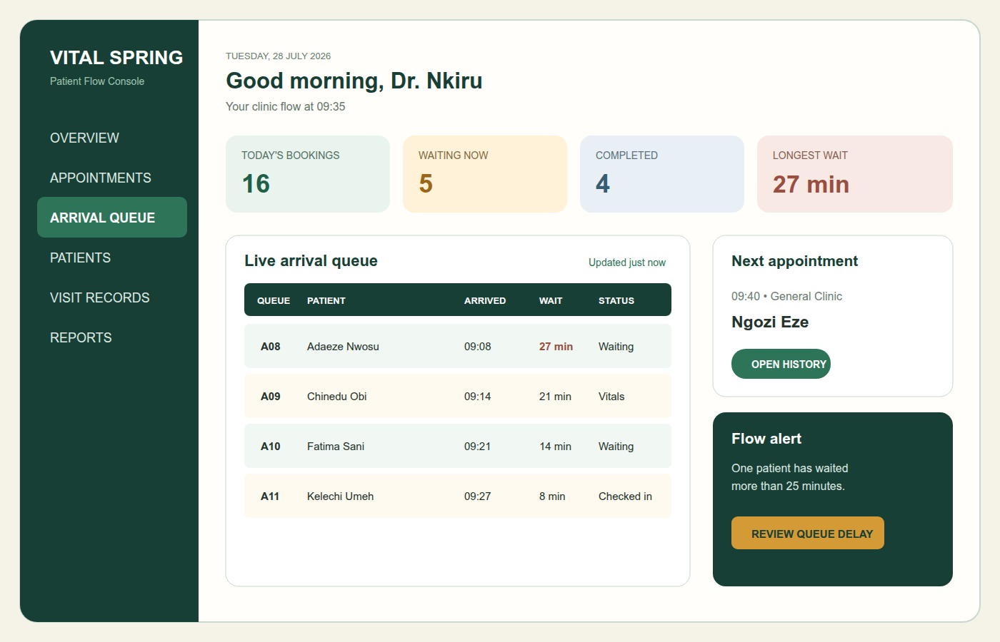
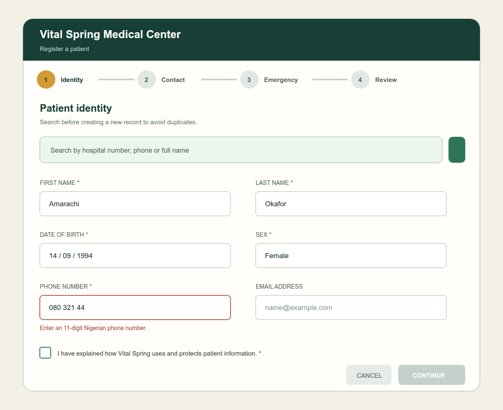
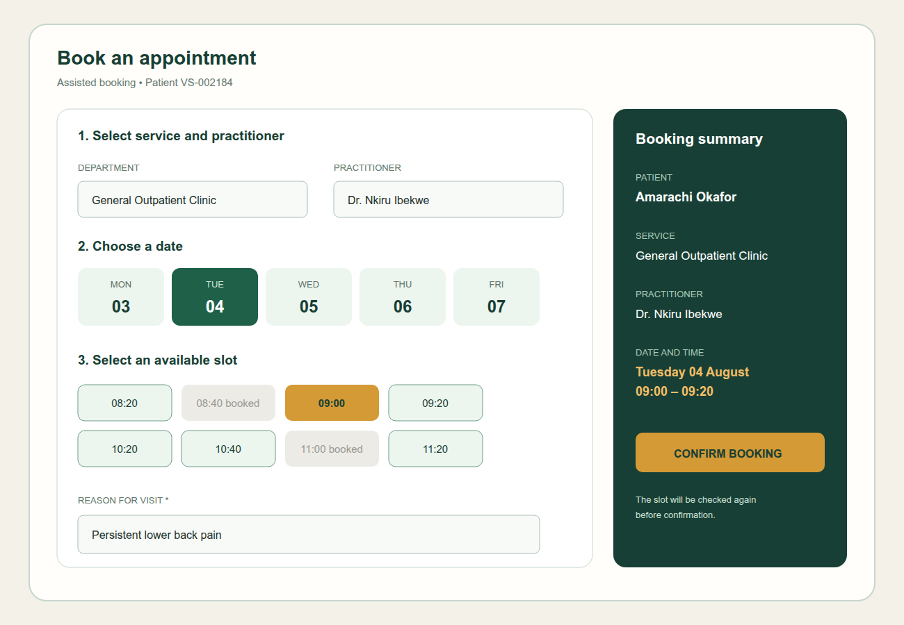
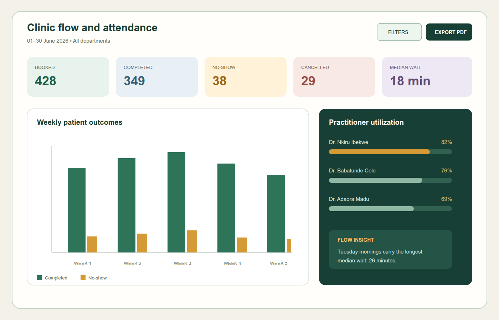
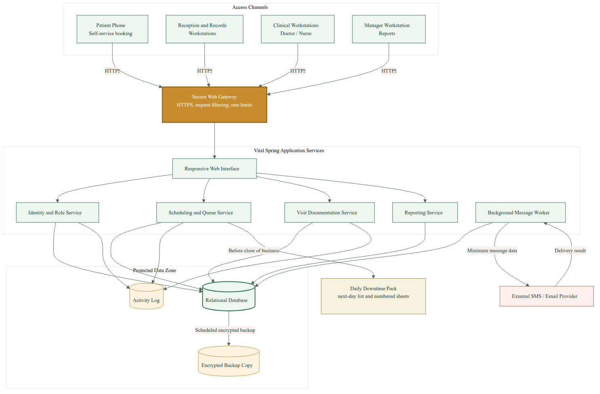

Group 9 acted as the systems analysis and design team responsible for preparing the proposed Vital Spring Medical Center Clinic Appointment System.
| S/N | Student Name | Matriculation Number |
|---|---|---|
| 1 | Chidozie David | 20241433102 |
| 2 | Onwuegbula Obinna | 20241426652 |
| 3 | Wehere Gospel | 20241426052 |
| 4 | Egba Tomure Chibuike | 20241424822 |
| 5 | Emmanuel Hannah | 20252560142 |
| 6 | Isoma Aaron | 20241464082 |
| 7 | Okoro Precious | 20241443222 |
| 8 | Eneh Desmond | 20241427892 |
| 9 | Ijeaku Chiemezie | 20241481232 |
| 10 | Irodi David | 20241456622 |
Vital Spring Medical Center is treated in this project as a medium-sized Nigerian outpatient facility that currently relies on paper folders, handwritten registers and a physical appointment book. The proposed Clinic Appointment System replaces the fragmented process with a secure browser-based service for patient registration, practitioner availability, appointment booking, patient check-in, live queue coordination, visit documentation, reminders and management reporting.
The design is distinguished by explicit patient-flow management. A queue entry records when a patient arrives, is called and completes the visit, allowing staff to see delays while they can still act. Patients may book through a self-service channel or receive assistance at reception or by telephone. A daily downtime pack supports continuity during connectivity interruptions.
The report follows the five assignment stages: project charter and feasibility; requirements and data-flow modelling; entity-relationship modelling and normalization; interface, database and architecture design; and implementation review. Preliminary estimates indicate an initial cost of ₦7.30 million, recurring annual cost of ₦1.40 million, annual tangible benefits of ₦4.50 million, and a simple payback period of approximately 2.35 years. The proposal is technically, economically and operationally feasible under the assumptions stated.
| Figure 2.1 | Context-Level Data Flow Diagram |
| Figure 2.2 | Level-0 Data Flow Diagram |
| Figure 3.1 | Entity-Relationship Diagram |
| Figure 4.1 | Live Patient-Flow Dashboard |
| Figure 4.2 | Patient Registration Form |
| Figure 4.3 | Appointment Booking Form |
| Figure 4.4 | Attendance and Patient-Flow Report |
| Figure 4.5 | Proposed System Architecture |
| Item | Definition |
|---|---|
| Project title | Vital Spring Medical Center Clinic Appointment System |
| Project sponsor | Vital Spring Medical Center Management |
| Prepared by | Group 9, INS 204 - System Analysis and Design |
| Case basis | A local medical center using paper folders and physical appointment books, personalized as Vital Spring Medical Center. |
The assumed existing system uses paper folders and handwritten appointment records. This creates scheduling conflicts, slow retrieval, damaged or misplaced history, repeated data entry, long waits, inconsistent reminders and weak management reporting. Physical records also provide limited control over who views information and no reliable record of access.
| ID | Goal | Measure of Success |
|---|---|---|
| G1 | Centralize active patient and appointment information. | Authorized search returns a patient in under 5 seconds. |
| G2 | Prevent practitioner scheduling conflicts. | No two active appointments reserve one availability slot. |
| G3 | Support self-service and assisted booking. | Reception, telephone and patient portal bookings use one schedule. |
| G4 | Make patient arrival and waiting visible. | Every checked-in appointment has a queue status and timestamps. |
| G5 | Improve access to relevant patient history. | Authorized practitioners can open previous visits before consultation. |
| G6 | Reduce missed appointments. | Confirmation and reminder outcomes are recorded for valid contacts. |
| G7 | Provide operational reports. | Attendance, wait-time and utilization reports generate by date range. |
| G8 | Protect patient confidentiality. | Role restrictions and activity logs cover sensitive functions. |
| Stakeholder | Interest | Project Involvement |
|---|---|---|
| Clinic Manager | Service performance, cost and accountability | Approves scope and reviews reports |
| Doctors | Accurate schedules, queues and history | Interviews, prototype review and acceptance tests |
| Nurses | Arrival order and permitted patient information | Workflow validation and training |
| Receptionists | Fast registration and conflict-free booking | Primary workflow participants |
| Records Staff | Patient identity quality and migration | Defines matching and verifies converted records |
| Patients | Accessible booking, shorter waits and privacy | Usability feedback and self-service use |
| System Administrator | Accounts, availability, backup and support | Technical review and operation |
The required technology is established and available in Nigeria. A browser interface, server application and relational database avoid specialized clinic hardware while supporting central rules and backups.
| Component | Requirement | Assessment |
|---|---|---|
| Client devices | Reception, records, clinical and management computers; modern browsers | Common hardware; phased replacement possible |
| Hosting | Managed server or professionally maintained local server | Available; managed hosting reduces local administration |
| Database | Relational DBMS with transactions and constraints | Mature technology suited to appointments |
| Network | Secured router, local network and primary internet link | Available; downtime pack mitigates interruptions |
| Power | UPS and backup electricity for essential workstations | Required due to local power risk |
| Messaging | SMS or email service with delivery response | Available from commercial providers |
| Backup | Encrypted daily copy stored separately and restoration tests | Technically straightforward but must be monitored |
All amounts are classroom estimates in Nigerian naira, not quotations. Actual procurement requires current prices and verified clinic baselines.
| Initial Cost Item | Estimate (₦) |
|---|---|
| System analysis and design | 450,000 |
| Application development and testing | 2,200,000 |
| Computers and peripherals | 1,600,000 |
| Network equipment and installation | 400,000 |
| Power backup equipment | 600,000 |
| Initial hosting and security setup | 250,000 |
| Active-record conversion | 350,000 |
| Staff training | 300,000 |
| Initial maintenance and support | 500,000 |
| Contingency allowance | 650,000 |
| Total Initial Cost | 7,300,000 |
| Annual Operating Item | ₦ |
|---|---|
| Hosting, backup and security | 360,000 |
| Maintenance and support | 600,000 |
| Messages and connectivity | 350,000 |
| Refresher training | 90,000 |
| Total | 1,400,000 |
| Annual Tangible Benefit | ₦ |
|---|---|
| Administrative time saved | 1,500,000 |
| Recovered appointment capacity | 2,000,000 |
| Paper and storage reduction | 450,000 |
| Reduced correction effort | 300,000 |
| Faster reporting | 250,000 |
| Total | 4,500,000 |
Intangible benefits include better patient confidence, continuity of care, staff coordination and accountability. The project is economically feasible if the planning assumptions are confirmed.
Chapter 1 establishes that the defined appointment and patient-flow system is feasible and should proceed to detailed requirements analysis.
Requirements represent what stakeholders need from the proposed system and the qualities that make those functions acceptable. Interviews, observation of registration and appointment handling, examination of paper forms and short patient questionnaires are proposed as gathering methods. The requirements below remain traceable to the process and data designs.
| ID | As a... | I want... | Acceptance Criteria |
|---|---|---|---|
| US-01 | Patient | to see available dates and request an appointment without visiting the center. | Only open slots appear; a successful booking returns a reference and confirmation. |
| US-02 | Patient | to change or cancel an appointment so an unusable slot is released. | The current booking is identified; permitted changes update the schedule and send a notice. |
| US-03 | Patient | to receive a reminder so I can prepare and arrive on time. | A reminder is queued before confirmed appointments and the delivery result is recorded. |
| US-04 | Receptionist | to find or register a patient and complete assisted booking quickly. | Search accepts number, phone or name; likely duplicates are shown before creation. |
| US-05 | Receptionist | to check in an arriving patient and issue a queue number. | A valid appointment creates one queue entry with check-in time and waiting status. |
| US-06 | Nurse | to see the live queue so patients can be prepared in order. | Waiting, vitals, called and completed states update without re-entering patient details. |
| US-07 | Doctor | to publish consultation slots so bookings reflect my actual availability. | Slots contain date and time; blocked or reserved slots cannot be offered. |
| US-08 | Doctor | to view relevant visit history and document the current visit. | Only authorized clinical users can open history; the record links to the appointment. |
| US-09 | Manager | to view attendance, waiting-time and utilization reports. | Reports filter by period and department and totals reconcile with appointment statuses. |
| US-10 | Administrator | to manage accounts and inspect sensitive activity. | Accounts can be activated or disabled; defined access and change events identify the user and time. |
| Ref | Area | The System Shall... |
|---|---|---|
| FR-01 | Authentication | authenticate every staff user before protected functions are available. |
| FR-02 | Authorization | enforce role permissions for receptionist, records, nurse, doctor, manager and administrator functions. |
| FR-03 | Patient | create a patient profile with a unique hospital number and required identity and contact information. |
| FR-04 | Patient | search by hospital number, phone or name and warn about likely duplicate patients. |
| FR-05 | Practitioner | maintain departments, practitioner profiles and active status. |
| FR-06 | Availability | create, block and display dated practitioner availability slots. |
| FR-07 | Appointment | book one open slot for one patient through portal, front desk, telephone or walk-in source. |
| FR-08 | Appointment | support confirmation, permitted rescheduling and cancellation while preserving history. |
| FR-09 | Conflict control | recheck and reserve a slot atomically so two appointments cannot use it. |
| FR-10 | Queue | check in a valid appointment and create one numbered queue entry. |
| FR-11 | Queue | track waiting, vitals, called, with-practitioner, completed and left statuses with timestamps. |
| FR-12 | Visit record | allow authorized practitioners to view relevant history and document complaint, findings, diagnosis and care plan. |
| FR-13 | Notification | send confirmation, reminder, reschedule and cancellation messages and record delivery outcomes. |
| FR-14 | Reporting | generate attendance, no-show, cancellation, waiting-time and practitioner-utilization reports. |
| FR-15 | Administration | create, disable and manage staff accounts without exposing password values. |
| FR-16 | Activity | log defined login, search, view and data-change actions with user and timestamp. |
| FR-17 | Continuity | produce a next-day appointment list and accept verified back-capture after downtime. |
| FR-18 | Backup | support daily protected backups and authorized restoration. |
| Ref | Quality | Requirement |
|---|---|---|
| NFR-01 | Privacy | Patient and health information shall be available only to authenticated roles with a work-related need. |
| NFR-02 | Security | Network traffic shall use HTTPS; passwords shall be salted hashes; staff sessions shall expire after 15 minutes of inactivity. |
| NFR-03 | Performance | Routine search and booking screens shall respond within 5 seconds for 25 concurrent users under normal connectivity. |
| NFR-04 | Availability | The service target shall be 99% monthly availability excluding approved maintenance. |
| NFR-05 | Recovery | The recovery time target shall be 4 hours and maximum planned data loss 24 hours. |
| NFR-06 | Usability | A trained receptionist shall locate an existing patient and book an open slot within 2 minutes. |
| NFR-07 | Accessibility | Forms shall have labels, keyboard operation, readable contrast and errors not communicated by color alone. |
| NFR-08 | Integrity | Keys, references, valid status values and one-appointment-per-slot rules shall be enforced in the database. |
| NFR-09 | Auditability | Activity entries shall identify the user, action, object and time and shall not be editable by ordinary application users. |
| NFR-10 | Maintainability | Components, database rules, backup steps and account procedures shall be documented. |
| NFR-11 | Scalability | The design shall support three times the assumed starting patient volume without changing the core data model. |
| NFR-12 | Message privacy | Patient messages shall omit diagnosis and detailed visit reasons. |
The context diagram treats the complete Vital Spring system as one process. It defines the boundary between internal processing and five external entities. Every flow is named as data rather than an action.

Patients exchange registration, booking and change information. Front desk staff support registration, appointments and check-in. Doctors and nurses provide schedules, queue actions and visit notes. Management requests reports and account approvals. The messaging service is external because it carries notifications but does not own clinic records.
The Level-0 DFD decomposes the system into six processes and six logical data stores. Its distinctive patient-flow process separates arrival management from appointment coordination, allowing waiting-time information to be captured without treating an appointment and an arrival as the same event.

| Process | Responsibility |
|---|---|
| 1.0 Register and Identify Patients | Creates profiles, searches existing identities and prevents avoidable duplicates. |
| 2.0 Maintain Practitioner Schedules | Records practitioners and the dated slots they offer. |
| 3.0 Coordinate Appointments | Displays slots, reserves one, records booking source and processes changes. |
| 4.0 Manage Arrival and Queue | Validates arrivals and tracks queue number, state and waiting timestamps. |
| 5.0 Document Patient Visit | Retrieves permitted history and stores the outcome of a consultation. |
| 6.0 Communicate and Report | Sends notices, receives delivery results and prepares operational reports. |
The requirements and DFDs establish what the system must do and how information crosses its boundary and principal processes.
| Entity | Purpose | Principal Attributes |
|---|---|---|
| PATIENT | Identifies a person receiving care. | patient_id (PK), hospital_number, name, DOB, sex, phone, email, address, emergency contact |
| DEPARTMENT | Groups practitioners by service area. | department_id (PK), department_name, location |
| PRACTITIONER | Represents a doctor or other bookable professional. | practitioner_id (PK), department_id (FK), staff_number, full_name, role, contacts, active |
| AVAILABILITY_SLOT | A dated period offered by one practitioner. | slot_id (PK), practitioner_id (FK), slot_date, start_time, end_time, slot_status |
| APPOINTMENT | Reserves one slot for one patient. | appointment_id (PK), patient_id, practitioner_id, slot_id, recorded_by (FKs), source, reason, status |
| QUEUE_ENTRY | Tracks the patient's physical arrival and progress. | queue_entry_id (PK), appointment_id (FK), check-in time, queue number, status, called/completed times |
| VISIT_RECORD | Stores the outcome of a completed consultation. | visit_record_id (PK), appointment_id (FK), complaint, findings, diagnosis, care plan, time |
| NOTIFICATION | Records appointment messages and delivery results. | notification_id (PK), appointment_id (FK), type, channel, destination, status, time |
| USER_ACCOUNT | Identifies an authorized staff user and role. | user_id (PK), username, password_hash, role, display_name, active, last_login |
| ACTIVITY_LOG | Records defined sensitive system actions. | activity_id (PK), user_id (FK), action, object, object_id, time, source_address |
| Relationship | Cardinality | Business Rule |
|---|---|---|
| DEPARTMENT contains PRACTITIONER | 1 : 0..many | Every practitioner belongs to one department; a new department may have none. |
| PRACTITIONER offers AVAILABILITY_SLOT | 1 : 0..many | Every slot belongs to one practitioner. |
| PATIENT requests APPOINTMENT | 1 : 0..many | Every appointment names one patient. |
| PRACTITIONER receives APPOINTMENT | 1 : 0..many | Every appointment names one practitioner. |
| AVAILABILITY_SLOT is reserved by APPOINTMENT | 1 : 0..1 | An open or blocked slot has no appointment; a reserved slot has at most one. |
| APPOINTMENT creates QUEUE_ENTRY | 1 : 0..1 | Cancelled and no-show appointments may have no arrival entry. |
| APPOINTMENT results in VISIT_RECORD | 1 : 0..1 | A completed visit may produce one signed record. |
| APPOINTMENT generates NOTIFICATION | 1 : 0..many | Confirmation, reminder, reschedule and cancellation are separate messages. |
| USER_ACCOUNT records APPOINTMENT | 1 : 0..many | recorded_by is optional for patient self-service bookings. |
| USER_ACCOUNT performs ACTIVITY_LOG | 1 : 0..many | Each staff activity entry identifies one account. |
The crow's-foot ERD expresses the logical data structure. Queue entries and availability slots are deliberately independent entities: an appointment reserves a planned slot, while the queue records what happened after physical arrival.

Normalization begins with a plausible paper register containing patient details, practitioner details and multiple visits in one row. It then removes repeating groups, partial dependencies and transitive dependencies.
| Hospital No. | Patient Name | Phone | Appointments {Date, Time, Practitioner, Department, Location, Queue No., Outcome} |
|---|---|---|---|
| VS-002184 | Amarachi Okafor | 08031244017 | {04/08/26, 09:00, Dr Nkiru Ibekwe, General Outpatient, Block A, A08, Completed}; {18/08/26, 10:20, Dr Nkiru Ibekwe, General Outpatient, Block A, -, Booked} |
| VS-001637 | Suleiman Bala | 07055881220 | {04/08/26, 11:20, Dr Adaora Madu, Physiotherapy, Annex 2, A12, Waiting} |
The appointment group repeats inside a single cell. The number of columns is not fixed, values are not atomic, and date-based appointment searches require reading inside each patient row.
Each appointment becomes one row and every field contains one value. A temporary composite key is (HospitalNo, SlotDate, StartTime).
| HospitalNo | PatientName | Phone | SlotDate | Time | PractitionerNo | PractitionerName | Department | Location | QueueNo |
|---|---|---|---|---|---|---|---|---|---|
| VS-002184 | Amarachi Okafor | 08031244017 | 04/08/26 | 09:00 | PR-014 | Dr Nkiru Ibekwe | General Outpatient | Block A | A08 |
| VS-002184 | Amarachi Okafor | 08031244017 | 18/08/26 | 10:20 | PR-014 | Dr Nkiru Ibekwe | General Outpatient | Block A | - |
| VS-001637 | Suleiman Bala | 07055881220 | 04/08/26 | 11:20 | PR-021 | Dr Adaora Madu | Physiotherapy | Annex 2 | A12 |
The table is atomic but patient facts repeat per appointment. Practitioner and department facts also repeat, producing update, insertion and deletion anomalies.
PatientName and Phone depend only on HospitalNo, which is part of the temporary composite key. They are moved to PATIENT. Appointment data receives an AppointmentID. Practitioner information still remains repeated in APPOINTMENT at this stage.
| PATIENT | ||
|---|---|---|
| HospitalNo (PK) | Name | Phone |
| VS-002184 | Amarachi Okafor | 08031244017 |
| VS-001637 | Suleiman Bala | 07055881220 |
| APPOINTMENT_2NF | |||||
|---|---|---|---|---|---|
| ID | HospitalNo | Date/Time | PractitionerNo | Name | Department |
| A-801 | VS-002184 | 04/08 09:00 | PR-014 | N. Ibekwe | General Outpatient |
| A-802 | VS-002184 | 18/08 10:20 | PR-014 | N. Ibekwe | General Outpatient |
PractitionerName and Department depend on PractitionerNo rather than AppointmentID. DepartmentLocation depends on DepartmentID. Queue information depends on the patient's arrival, not merely on the appointment. These transitive and separate-event facts are extracted.
| 3NF Relation | Attributes |
|---|---|
| PATIENT | PatientID (PK), HospitalNumber, Name, DOB, Sex, Phone, Email, Address, EmergencyContact |
| DEPARTMENT | DepartmentID (PK), DepartmentName, Location |
| PRACTITIONER | PractitionerID (PK), DepartmentID (FK), StaffNumber, FullName, Role, Contacts, Active |
| AVAILABILITY_SLOT | SlotID (PK), PractitionerID (FK), SlotDate, StartTime, EndTime, SlotStatus |
| APPOINTMENT | AppointmentID (PK), PatientID, PractitionerID, SlotID, RecordedBy (FKs), Source, Reason, Status, BookedAt |
| QUEUE_ENTRY | QueueEntryID (PK), AppointmentID (FK), CheckedInAt, QueueNumber, QueueStatus, CalledAt, CompletedAt |
| VISIT_RECORD | VisitRecordID (PK), AppointmentID (FK), Complaint, Findings, Diagnosis, CarePlan, DocumentedAt |
The normalized relations correspond directly to the ERD and form the basis of the physical schema in Chapter 4.
The dashboard is not a conventional list of today's appointments. Its central element is the arrival queue, supported by waiting-time indicators, next-appointment context and a delay alert. This lets clinic staff respond before waiting becomes excessive.

The status column remains understandable in grayscale because each state is written in text. The history action is available only when the signed-in role has clinical permission.
The registration flow starts with an existing-patient search. Identity, contact, emergency and review stages reduce cognitive load. The example displays a phone error without clearing the valid name and date fields.

| Field | Required | Validation |
|---|---|---|
| First and last name | Yes | 2-50 characters; letters, spaces, apostrophes and hyphens. |
| Date of birth | Yes | Valid date not later than today; review warning for implausible age. |
| Sex | Yes | Selected from approved values. |
| Phone | Yes | Normalized Nigerian number; duplicate search reruns after correction. |
| No | Valid address format when supplied. | |
| Address | Yes | 5-160 characters. |
| Emergency contact | Yes | Name and reachable phone. |
| Privacy acknowledgement | Yes | Staff confirms explanation before final registration. |
The booking flow selects department and practitioner before a date. Only open, future slots appear. Booked slots remain visible but unavailable so users understand why a desired time cannot be selected.

At confirmation, the system locks the selected slot, checks that it is still open, creates the appointment and marks the slot reserved in one transaction. If another user reserved it first, the transaction does not create a duplicate booking and the user receives newly available alternatives.
The management report combines conventional attendance outcomes with median waiting time and practitioner utilization. The flow insight draws attention to a period that requires staffing or scheduling review.

All displayed numbers are illustrative project data. Production values would be calculated from appointment outcomes, queue timestamps and practitioner slots for the selected reporting period.
| Table | Important Columns and Constraints |
|---|---|
| department | department_id BIGSERIAL PK; department_name VARCHAR(80) UNIQUE; location VARCHAR(80) |
| user_account | user_id PK; username UNIQUE; password_hash; role CHECK; display_name; active; last_login |
| patient | patient_id PK; hospital_number UNIQUE; identity, contact and emergency fields; registered_at |
| practitioner | practitioner_id PK; department_id FK; staff_number and email UNIQUE; professional_role; active |
| availability_slot | slot_id PK; practitioner_id FK; date and times; slot_status CHECK; UNIQUE practitioner/date/start |
| appointment | appointment_id PK; patient, practitioner, slot and recorded_by FKs; slot_id UNIQUE; source and status CHECK |
| queue_entry | queue_entry_id PK; appointment_id UNIQUE FK; check-in, called and completion timestamps; status CHECK |
| visit_record | visit_record_id PK; appointment_id UNIQUE FK; complaint, findings, diagnosis and care plan |
| notification | notification_id PK; appointment_id FK; message type, channel and delivery status CHECK |
| activity_log | activity_id PK; user_id FK; action, object, time and source address |
open and that its practitioner matches the request.slot_id permits only one appointment for that slot.reserved and commit.Cancelled appointments may reopen a future slot according to the cancellation rule. Historical appointment rows remain for reporting and accountability.
Vital Spring uses a secure client-server architecture with four access channels. All channels pass through one protected web gateway; none connects directly to the database. Application services separate identity, scheduling and queue, visit documentation, reporting and background messaging.

| Component | Responsibility |
|---|---|
| Access channels | Role-specific patient, front desk, clinical and management interfaces. |
| Secure web gateway | HTTPS termination, request filtering and traffic limits. |
| Identity and role service | Authentication, session handling and role checks. |
| Scheduling and queue service | Slot reservation, appointment lifecycle, check-in and queue timestamps. |
| Visit documentation service | Permitted history retrieval and current visit records. |
| Reporting service | Attendance, waiting-time and utilization calculations. |
| Background message worker | Queued messages, retries and provider delivery results. |
| Relational database | Transactional operational data with keys and constraints. |
| Activity log | Evidence of defined sensitive actions. |
| Encrypted backup | Separate recovery copy. |
| Daily downtime pack | Minimum printed continuity information for the next clinic day. |
| Function | Reception | Records | Nurse | Doctor | Manager | Administrator |
|---|---|---|---|---|---|---|
| Patient identity | Create/edit | Create/edit | View | View | Limited | Support only |
| Appointments | Create/edit | View | View/check-in | Own schedule | View/report | Support |
| Queue | Check-in | No | Manage | Call/complete | Report | Support |
| Visit records | No | No clinical content | Limited view | View/write for care | No clinical content | No routine content |
| Reports | No | No | No | Own summary | Full operational | Technical |
| User accounts | No | No | No | No | Approval | Manage |
Chapter 4 turns the logical models into interfaces, database rules and a deployable architecture while preserving patient-flow and privacy requirements.
| Phase | Weeks | Activities and Exit Condition |
|---|---|---|
| 1. Confirm | 1-2 | Observe workflows, validate requirements and measure assumed baselines. Exit: approved requirements. |
| 2. Prototype | 3-4 | Test registration, booking, queue and report screens with representative users. Exit: agreed revisions. |
| 3. Build | 5-12 | Implement identity, patient, practitioner, slot, appointment, queue, visit, message and report functions. Exit: integrated test release. |
| 4. Test | 13-16 | Functional, integrity, security, performance, usability and recovery tests. Exit: no unresolved critical defect. |
| 5. Prepare Data | 14-18 | Inventory, clean, capture and verify active paper records. Exit: signed reconciliation. |
| 6. Train | 17-18 | Role-based scenarios and privacy training. Exit: competence demonstrated. |
| 7. Pilot | 19-20 | One service area uses the system with daily issue review and controlled comparison. Exit: stable core workflow. |
| 8. Deploy | 21 | Final migration, account activation and on-site support. Exit: authorized operational use. |
| 9. Review | 22, 30 and 90 days | Compare metrics, incidents, user feedback and costs. Exit: acceptance or corrective plan. |
| Test Level | Representative Evidence |
|---|---|
| Unit | Phone normalization, slot status, queue duration, appointment transitions and report formulas. |
| Integration | Foreign keys, slot transaction, message provider responses and activity logging. |
| System | Every FR tested through valid, invalid and boundary scenarios. |
| Security | Role bypass, unauthorized record access, injection, session expiry, account disabling and export restrictions. |
| Performance | 25 concurrent users; common screens meet 5-second target. |
| Recovery | Restore a protected backup into an isolated environment within four hours. |
| Usability | Representative users perform their core tasks without coaching. |
| User Acceptance | Manager, receptionist, nurse and doctor sign agreed fictional scenarios. |
| ID | Scenario | Expected Result |
|---|---|---|
| AT-01 | Two users confirm the same Slot 09:00 simultaneously. | Exactly one appointment commits; the other receives alternatives. |
| AT-02 | Reception user attempts to open a visit-record address. | Access denied; no clinical text returned; denied attempt logged. |
| AT-03 | Registration uses an existing phone and matching DOB/name. | Possible duplicate displayed before any new patient is created. |
| AT-04 | Reception checks in one appointment twice. | One queue entry remains; second attempt explains current queue number. |
| AT-05 | Message provider reports temporary failure. | Notification becomes retrying and later records final delivery result. |
| AT-06 | Backup restoration exercise is performed. | Service starts in isolation within four hours and sample records reconcile. |
| AT-07 | Manager filters June General Outpatient report. | Totals equal underlying appointment states; median wait uses queue timestamps. |
| Audience | Duration | Content | Competence Evidence |
|---|---|---|---|
| All staff | 1 hour | Confidentiality, credentials, screen privacy, phishing and incident reporting | 80% privacy assessment before activation |
| Reception and records | 2 half-days | Search, duplicates, registration, slots, appointment changes, check-in and downtime | Complete five timed scenarios |
| Nurses | Half-day | Arrival validation, queue states, permitted information and escalation | Process one arrival-to-call scenario |
| Doctors | Half-day | Slots, personal queue, history, visit records and corrections | Complete a fictional visit |
| Manager | 2 hours | Reports, utilization, account approval and activity review | Generate and explain a report |
| Administrator | 1 day | Accounts, monitoring, backups, restoration, updates and incidents | Complete restoration and account lifecycle exercises |
All baselines below are project assumptions until measured during Phase 1. The 90-day review compares like-for-like clinic periods.
| Metric | Assumed Baseline | 90-Day Target | Source |
|---|---|---|---|
| Double-booked slots | Occurs manually | 0 | Slot and appointment exception report |
| Patient search time | 5-15 minutes | Under 5 seconds | Timed sample |
| Existing-patient booking time | 8-12 minutes | 2 minutes or less | Workflow observation |
| No-show rate | To be measured | 15% relative reduction | Appointment statuses |
| Median arrival-to-call wait | To be measured | 20% reduction | Queue timestamps |
| Assisted/self-service mix | 100% manual | Monitor, no exclusion target | Booking source |
| Availability | Not applicable | 99% monthly | Monitoring report |
| Backup restoration | Untested | Quarterly test within 4 hours | Signed exercise report |
| User task completion | Not measured | 90% without coaching | Training and 30-day review |
The implementation plan converts the specification into controlled phases with measurable acceptance, training and operational review.
| Requirement | Design Evidence | Verification |
|---|---|---|
| FR-01, FR-02; NFR-01, 02 | User Account, Activity Log, Process 6.0, role matrix, identity service | Login, timeout, disabled-account and role-bypass tests |
| FR-03, FR-04 | Process 1.0, D1, PATIENT, registration mockup | Valid/invalid registration and duplicate AT-03 |
| FR-05, FR-06 | Process 2.0, D2, DEPARTMENT, PRACTITIONER, AVAILABILITY_SLOT | Slot boundary and blocked-slot tests |
| FR-07-09; NFR-08 | Process 3.0, booking mockup, slot transaction and unique slot_id | Booking source, reschedule and AT-01 |
| FR-10, FR-11 | Process 4.0, D4, QUEUE_ENTRY, dashboard | AT-04 and timestamp/status tests |
| FR-12 | Process 5.0, D5, VISIT_RECORD, role matrix | Visit save, history and unauthorized AT-02 |
| FR-13; NFR-12 | Process 6.0, NOTIFICATION, message worker | Message content, schedule, retry AT-05 |
| FR-14 | Report mockup, reporting service, Appointment and Queue data | Formula reconciliation and AT-07 |
| FR-15, FR-16 | USER_ACCOUNT, ACTIVITY_LOG, administration design | Account lifecycle and append-only permission tests |
| FR-17 | Downtime pack and implementation procedure | Simulated outage and two-person back-capture |
| FR-18; NFR-05 | Encrypted backup component | AT-06 restoration exercise |
| NFR-03, 04, 06, 07 | Architecture and responsive mockups | Load, timing, keyboard and contrast tests |
| Term | Meaning |
|---|---|
| Activity log | A protected record identifying who performed a defined system action and when. |
| Cardinality | The number of instances of one entity that may relate to another. |
| Data Flow Diagram (DFD) | A model of external entities, processes, data stores and data moving between them. |
| Entity-Relationship Diagram (ERD) | A model of entities, attributes, identifiers and relationships. |
| Foreign Key (FK) | An attribute that references the primary key of another relation. |
| Normalization | Organizing relations to reduce repetition and data anomalies. |
| Primary Key (PK) | An attribute or combination that uniquely identifies a row. |
| Queue Entry | A record of a patient's physical arrival and progress through the outpatient queue. |
| Role-Based Access Control | Permissions assigned according to defined job responsibilities. |
| Recovery Point Objective | The maximum planned period of data that may need to be recreated after failure. |
| Recovery Time Objective | The target time for restoring an unavailable service. |
| User Acceptance Testing | Testing by representative users against agreed business requirements. |